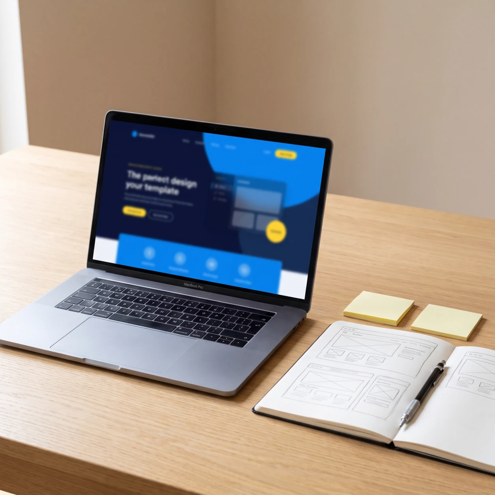
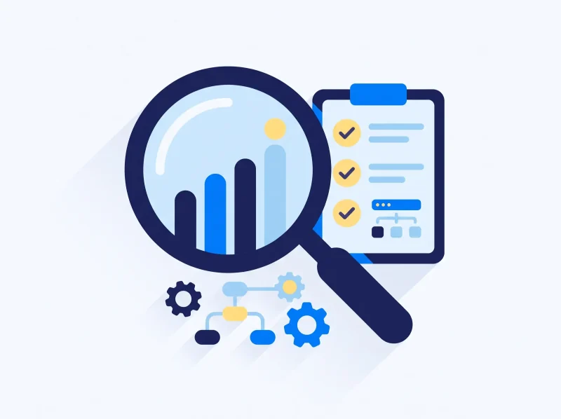
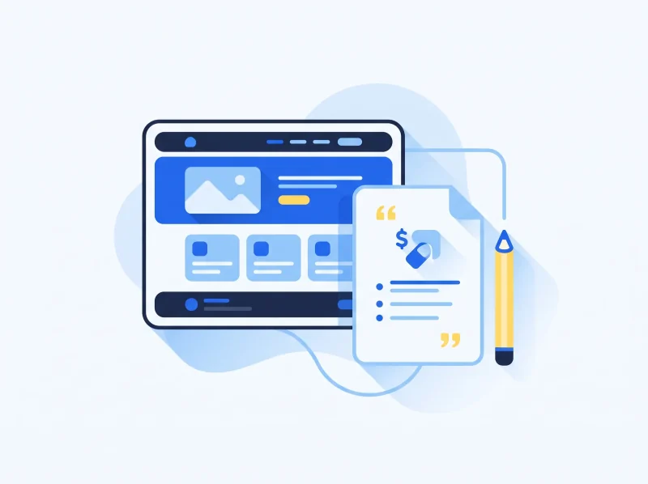
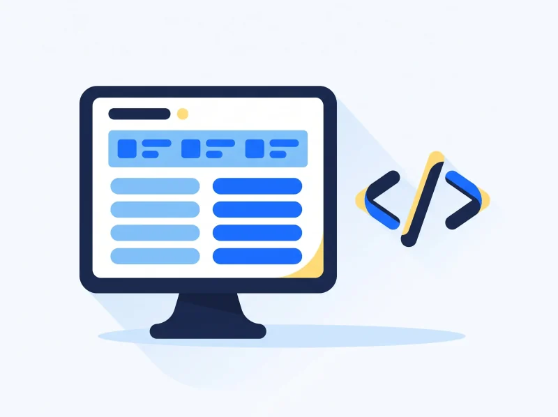
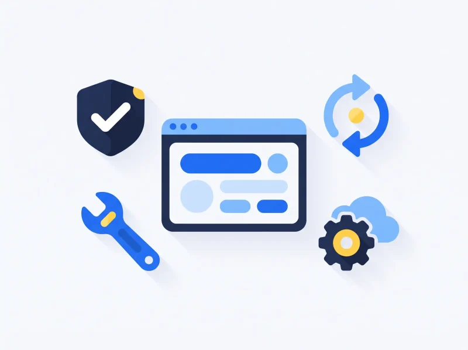

Od pomysłu do gotowej strony
Bez chaosu i niedomówień. Prowadzę Cię za rękę przez cały proces — od pierwszej rozmowy, przez projekt i realizację, aż po wdrożenie strony i wsparcie, gdy już działa.

6 kroków, zero niespodzianek
Na każdym etapie wiesz, co się dzieje, co jest do decyzji i kiedy strona ruszy.
Jak powstaje Twoja strona
-
Kontakt i bezpłatna konsultacja
Zaczynamy od rozmowy. Poznaję Twoją firmę, klientów i to, co strona ma dla Ciebie zrobić — bez zobowiązań i bez żargonu.
- Rozmowa o firmie, celach i grupie klientów
- Ustalenie oczekiwań i zakresu strony
- Pierwsze pomysły i kierunek działania
-
Analiza i strategia
Zanim powstanie pierwszy piksel, układam plan. Sprawdzam branżę i konkurencję oraz projektuję strukturę strony tak, by realnie pracowała na klientów.
- Analiza branży, konkurencji i grupy docelowej
- Struktura strony i plan treści
- Założenia pod SEO lokalne i Google

-
Projekt i przejrzysta wycena
Przygotowuję makietę najważniejszych sekcji oraz jasną wycenę i harmonogram. Wiesz dokładnie, co dostaniesz, ile to kosztuje i kiedy będzie gotowe.
- Makieta układu i kluczowych sekcji
- Przejrzysty zakres prac i wycena
- Harmonogram realizacji

-
Projektowanie i kodowanie
Tu strona nabiera kształtu. Projektuję indywidualny design dopasowany do Twojej marki i buduję szybką, responsywną stronę — gotową na telefon, tablet i komputer.
- Indywidualny design dopasowany do marki
- Kodowanie i pełna responsywność
- Optymalizacja pod szybkość i Google

-
Testy i wdrożenie
Przed startem wszystko dokładnie sprawdzam. Testuję stronę na różnych urządzeniach, podpinam domenę i narzędzia, a na końcu publikuję ją na serwerze.
- Testy na urządzeniach i w przeglądarkach
- Domena, certyfikat SSL i Google Analytics
- Publikacja strony na serwerze
-
Wsparcie i rozwój
Wdrożenie to nie koniec, a początek. Pokazuję, jak korzystać ze strony, dbam o aktualizacje i bezpieczeństwo oraz rozwijam ją razem z Twoją firmą.
- Wprowadzenie do obsługi strony
- Aktualizacje, poprawki i kopie zapasowe
- Rozbudowa w miarę rozwoju firmy
